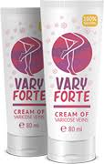
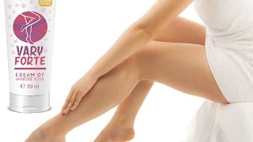
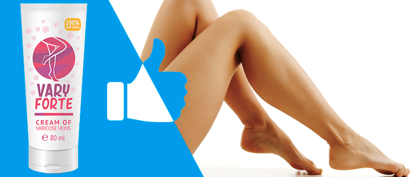
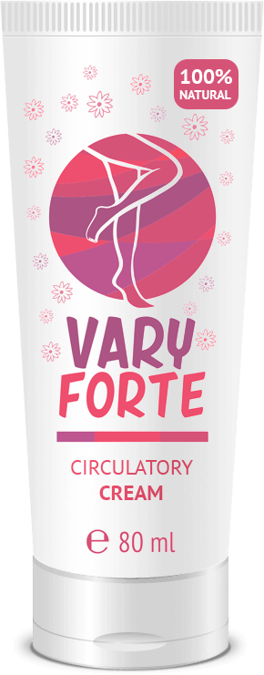

Полное лечение, которое предотвращает появление варикозных вен. Просто используйте его! Это устраняет появление варикозных вен, тонизирует кожу и укрепляет стенки вены тонким и эффективным способом.
Отличный метод предотвращения и лечения уже видимых. Это спасение, которое вы должны были найти раньше!

Варикозное расширение вен не следует рассматривать только как эстетическую проблему. Если вы не лечите, вы можете вызвать нарушения и риски для здоровья, связанные с их осложнениями. Когда есть случаи сломанных вен или капилляров, существует очень простое и эффективное решение. Это Varyforte, специальный крем, который придает боль пострадавшим районам, уменьшает отечность и сбрасывает здоровье венозных стенок, облегчая их заживление. В сложных случаях крем следует использовать в течение длительного времени, а заживление происходит медленнее, тогда как люди, которые занимают время в вену вен, могут надеяться на положительные результаты в мгновение ока.

Если у вас есть следующие симптомы, вы должны принять этот крем, чтобы действовать заранее:
- Чувство усталости и тяжести в ногах;
- Судороги в области теленка или ноги особенно в ночное время;
- Ощущение опухания / покалывание и зуд у ног;
- Жжение (чувство жара) в областях, окружающих варикозное расширение вен;
- Боль в нижних конечностях в варикозных венах.

Чтобы продукт работал хорошо, вещи должны быть сбалансированы между наукой и природой в сочетании с традицией. Крем Varyforte для варикозных вен делает именно это. Это на 100% естественное, сделано в соответствии с последними исследованиями в области медицины, которые занимаются венозными венами и болезнями.

СДЕЛАЙТЕ ЗАКАЗ
НОВАЯ ЦЕНА:
39 €
СТАРАЯ ЦЕНА:
78 €
Виктор, 46 год
Я пришел к практически второй стадии варикозного расширения вен, и я подумал, что мне приходится прибегать к хирургическому лечению или использовать склероз для вен. Я не думаю, что здорово использовать склероз, и я попытался найти натуральный крем, который бы мне помог. К счастью, в рекламе я увидел этот крем и заказал его сразу. Через пару месяцев есть невероятные результаты! Лодки больше не фиолетовые, они не болят и медленно выходят. Я очень счастлив!
Алексей, 25 год
Я молод, но у меня синеватые и раздутые вены, также болящие. Мой случай с больными венами связан с генетикой и ожирением. Я тонкий, но я также использовал крем для варикоза в течение нескольких месяцев, и теперь могу сказать, что ситуация значительно улучшилась, а вены так сладки. Я могу только рекомендовать всем попробовать поверить! Очевидно, что сегодня ничего не происходит завтра, и вы должны иметь терпение, но результаты очень близки.
Мария, 30 год
После трех беременностей я начала слышать странные свисания раньше, отек был создан в тот момент, когда у меня были слегка увеличенные и голубоватые вены. Я думала, что это мимолетная вещь, но мой друг предложил позаботиться об этом, потому что он узнал ранние стадии венозной болезни. Благодаря ему я выбрала этот натуральный продукт на 100% и не пожалела об этом. Я сразу увидела улучшения. Опухоль исчезла, отеки отступили, и вены казались менее воспалительными. Продолжая регулярное использование, я улучшилась на 90%, и я продолжаю использовать крем в качестве профилактики. Я рекомендую всем
СДЕЛАЙТЕ ЗАКАЗ
НОВАЯ ЦЕНА:
39 €
СТАРАЯ ЦЕНА:
78 €